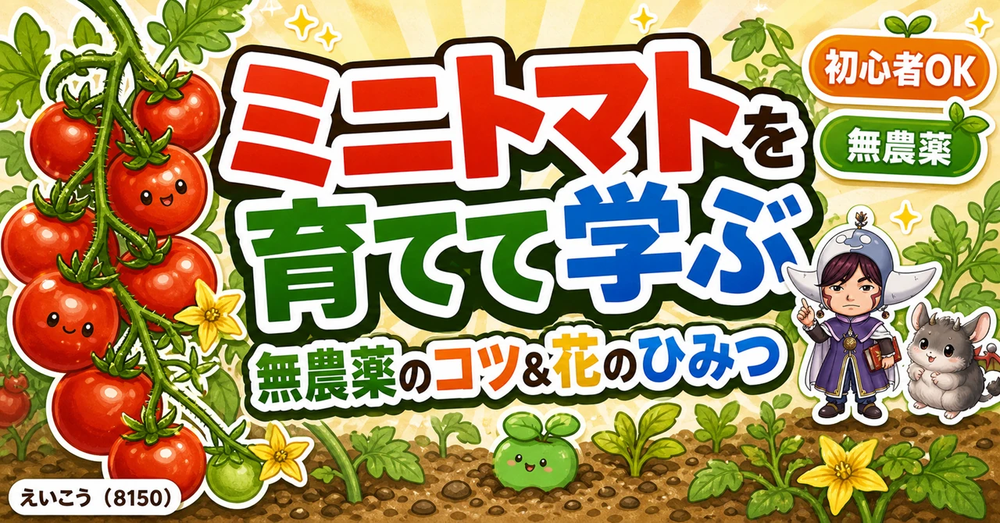
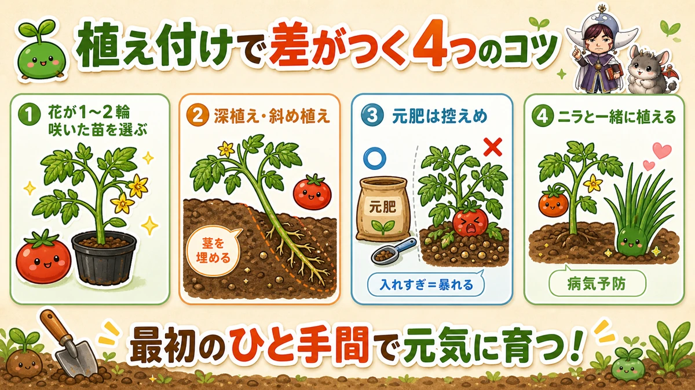
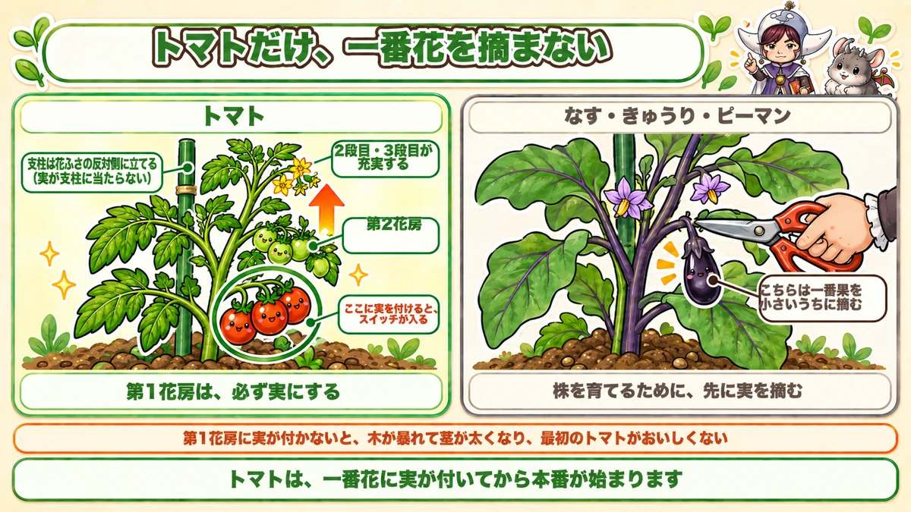
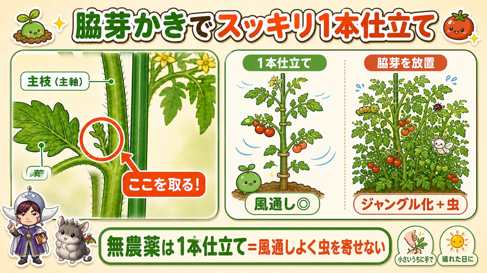
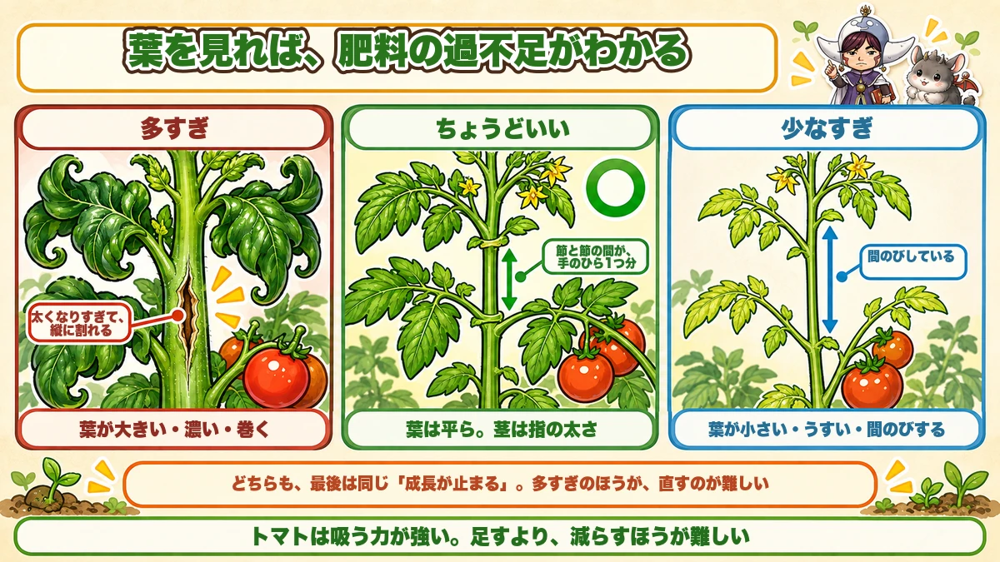
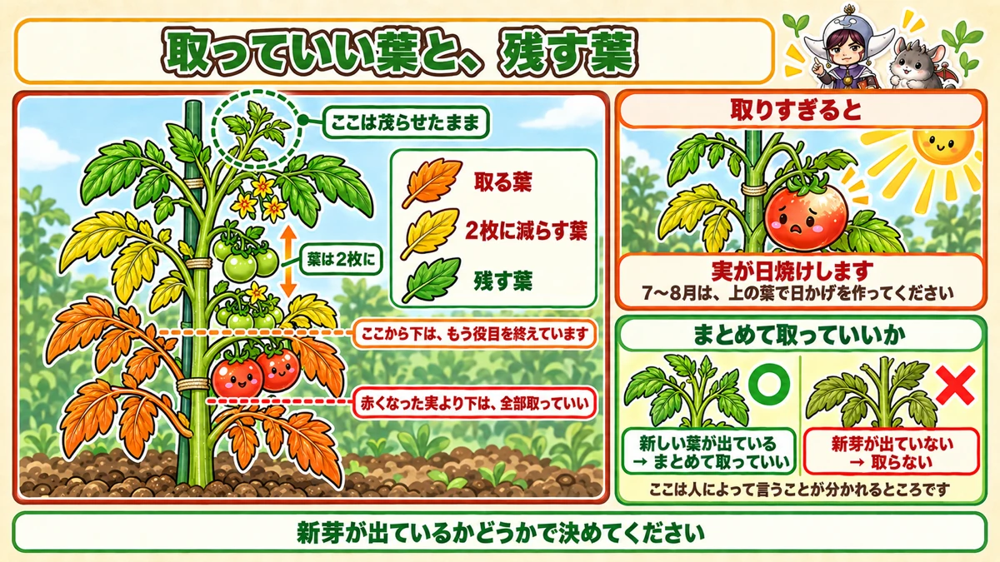
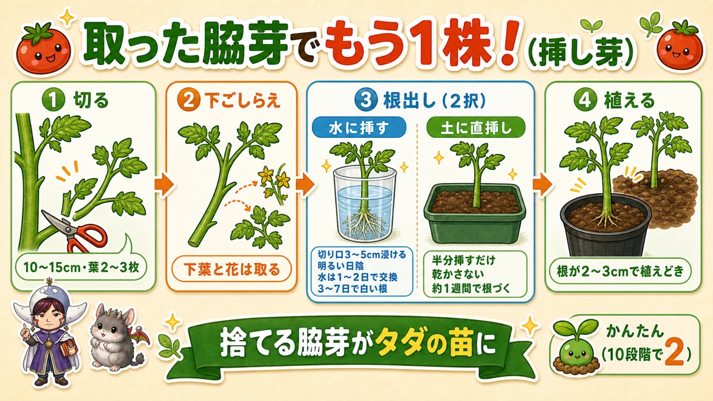
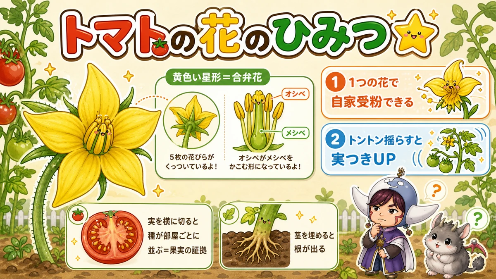

トマト栽培の調べ物帳｜植え付け・水管理・わき芽から実のトラブルまで

📖 この記事の目次
この記事で分かること
- 初めての栽培は、中玉かミニから。苗は背丈だけで選ばず、節の詰まり方と根、最初の花の状態を確認します。
- 最初の花房は残し、実をつける方向で管理します。わき芽を取るときにも、この花を落とさないようにします。
- 水の判断は『地面に根を伸ばせる畑』と『土の量が限られる鉢』で変えます。水を減らすことだけを目標にしません。
- 肥料は、葉の濃さ・大きさ・茎の太さを見て判断します。伸びが止まっただけでは、不足と決められません。
- 実のお尻の黒ずみ、割れ、穴、しおれは別々の問題です。症状を分けると、次にする作業も変わります。
- 管理方法が食い違うところは、何を優先している説明かを比べます。花と根の観察では、栽培の理由も確かめられます。
トマトの葉が元気なのに、実はさっぱり。「元気そうやのに、何が足りんの？」となりますよね。実は、足すよりも、いったん追加を止めて見直したほうがよい場面があります。水も肥料も、たくさん与えた分だけ実が増える仕組みではありません。
このページでは、苗を植える前の準備から、夏の手入れ、収穫後までを順番にまとめます。作業中に迷ったときは、症状別の章を先に開いてください。最初から最後まで覚える必要はありません。いま見えている葉や実を手がかりに、必要なところを確認する使い方で大丈夫です☺️
早見：トマトの育て方（ひと目で分かる数字）
植える前に使う数字
- 植え付け時期：材料にある計画は4月中旬〜下旬からゴールデンウィークごろ。遅くとも5月中旬までとする説明があります。全国一律の締め切りではなく、霜がなくなったことと夜の冷え込みを先に確認します。
- 気温の目安：最低気温が8℃を超えるころという説明があります。8℃未満の日が続く場所は、店に苗が並んでも植え急がないほうが安心です。桜が咲いて約1か月後という目安もありますが、気温の確認の代わりにはしません。
- 種まき時期：今回の材料は苗からの栽培が中心です。地域別の種まき日や育苗日数はそろっていないため、ここでは数字を補いません。種から育てる場合は、手元の種袋の適期を確認してください。
- 1本仕立ての株間：40〜60cm。動画の説明には40cmの例と、無農薬で風通しを確保するため60cmにする例があります。通路から葉裏を見られる余裕も含めて決めます。
- 2本仕立ての株間：60cmとする例があります。枝を増やす場合は、1本仕立てと同じ狭さに押し込まないことが出発点です。
- うね幅：110cmのうねに、株間50cmで二列を互い違いに植える例があります。この数字は二列植えの一例です。一列植えにも共通する標準幅としては使いません。
- 土づくりの準備：植える3週間前まで、または1か月以上前という説明があります。植え付け日から逆算し、肥料を入れたばかりの土へ急いで植える予定を避けます。
- 元肥の量：控えめに始める考え方と、土に残る肥料を見込んで窒素分を追加しない考え方があります。『一株につき何杯』という単独の数字に置き換えず、面積と前作の管理を確認します。
- 連作の間隔：前年にナス科を植えた場所を避ける説明と、連作障害が問題になる例は多くないという説明があります。材料に一律の休ませる年数はありません。じゃがいもの直後は避け、病気の履歴も確認します。
植えたあとに使う数字
- 本支柱の長さ：210cmを使う例があります。株元から約10cm離し、苗の根鉢の外へ立てる目安です。地面に差し込む分があるので、全部が地上の高さになるわけではありません。
- 仮支柱から替える時期：草丈30cm程度、または仮支柱の半分ほどの高さという説明があります。風で株が揺れ始める前に、長い支柱へ固定できる状態を作ります。
- 誘引する間隔：15〜20cmと30〜40cmの説明があります。誘引は、茎を支柱に結んで倒れないようにする作業です。数字だけでなく、茎の曲がりと果房の重さを見て追加します。
- 取るわき芽の大きさ：3〜5cmほど。伸び過ぎる前に見つけるための目安です。まだ先端と区別できない芽は、無理に折りません。
- 水を調べる深さ：表面から2〜3cm下の土も確認する説明があります。表面が白っぽいだけで、水不足とは決めません。
- 追肥する時期：追加しない方法、実がふくらみ始めたときに弱い株だけ少量与える方法、梅雨明けまでは追加しない方法があります。株の勢いと季節をセットで判断します。
- 実がついてから色づくまで：約30〜40日という幅で見ます。動画では約1か月の説明と、平均気温25℃で約40日の説明があります。苗を買った日から数える日数ではありません。
- 挿し芽用の枝：葉が2〜3枚ついた先端を使う説明があります。土に挿す方法では約3日、水に挿す方法では約1週間で根が出る例があります。条件による幅があるので、日数だけで成功を決めません。
- 収穫の終わり：8月上旬〜中旬に片付ける計画例があります。ただし、先端の伸びと開花が続くか、秋野菜を植える予定があるかで変わります。
数字を混ぜる前に、栽培条件をそろえる
『40cm間隔で植えられる』と『2本にすると収量が増える』を、別々の説明から拾って組み合わせるのは要注意です。枝が増えたのに場所が増えなければ、葉が重なり、虫を探す手も入りにくくなります。数字は、どの仕立て方の話かまで一組で使ってください。
収穫までの日数も同じです。花が咲いた日、実のふくらみを確認した日、植えた日は違います。記録には『いつから数えたか』を添えると、まだ青い実を見て焦らずに済みます。
- 畑かプランターかを決めた
- 苗の種類と、1本・2本の仕立て方を決めた
- 夜の気温と霜の心配を確認した
- 株間に加えて、支柱と通路の場所を確保した
- 前作と肥料を入れた時期をメモした
ここまで分かれば、買い物の順番も決めやすくなります。苗だけ先に買って、支柱も置き場所も後から考えると、なんか急に忙しくなるんですよね。先に場所を決めておくとラクです。
作業の手順（時期の順）
1．実の大きさと、手入れできる場所を決める
- 『一口で食べたい』『ほどよい食べ応えが欲しい』『大きな実を切って食べたい』から、ミニ・中玉・大玉を選びます。
- 雨の当たり方、土の水はけ、見回れる頻度を確認します。雨よけを置けない場合や初挑戦では、中玉・ミニを中心に考えます。
- 生で食べる楽しさを優先するか、割れにくさや扱いやすさを優先するかを決め、皮の特徴も苗の表示で確認します。
- 植える数を決める前に、葉が広がる範囲と、人が手を入れる通路を確保します。
大玉は魅力がありますが、実が大きい分、色づくまでの管理が長くなります。尻腐れや裂果、強い日差しの影響も気にする場面が増えます。初めから全部を大玉にせず、中玉やミニで収穫を楽しみながら、大玉も少し試す考え方があります。
柔らかい皮は、生で食べるときの口当たりが楽しみになります。その一方で、割れや虫の被害への注意が増えます。皮がしっかりしたものは、扱いやすさを優先したいときの候補です。『甘い』という表示だけで決めず、雨の多い場所で管理するのかも一緒に考えてください。
畑と鉢では、そのあとの水管理がかなり変わります。鉢なら毎朝土を見られるか、畑なら雨のあとに水がたまらないか。育てる場所の都合を先に決めると、後から「その方法、うちでは無理やな」が減ります。
2．前作と排水を調べ、土を準備する
- 前に育てた野菜を確認します。トマト・なす・ピーマン・じゃがいもは同じナス科として、記録にまとめます。
- 雨のあとに水が残る場所を確認し、水が抜ける通路と、通路より高いうねを用意します。
- 前作で肥料を多く使ったか、土づくりをしたばかりかを確認します。残っている分を無視して、毎回同じ量を追加しないようにします。
- 肥料を入れる方法なら、植える3週間〜1か月以上前から準備します。購入苗が待っていても、直前の大量投入で帳尻を合わせません。
トマトは肥料をよく吸う野菜です。吸う力が強いからたくさん必要、と思いたくなりますが、ここがややこしいところ。入り過ぎると、茎や葉を増やすほうへ偏り、実を育てるバランスが崩れます。植え付け前は『足りないかも』だけでなく、『もう土にあるかも』も考えます。
元肥は、植える前に土へ入れる肥料のことです。窒素分を控える方法では、油かすを避け、鶏ふんを少量使う例があります。別の方法では、動物性の肥料を入れずに育てます。この違いは後ろの両論の章で整理します。ひとまず、どちらも量を上乗せし続ける方針ではない、と押さえてください。
準備が間に合わない場合には、肥料を追加せず植える考え方もあります。深い位置に施す方法を、浅い植え穴へ肥料を入れる話に読み替えるのは避けてください。根に近い場所へ大量に置けばよい、という意味ではありません。初めてなら、急いで特殊な施肥を試すより、今ある土の状態を確認するほうが進めやすいです。
水はけは、植えてから直しにくい条件です。晴れた日に表面が乾いていても、雨のたびに通路とうねが水浸しになる場所では、根の状態が悪くなります。日当たりのよさだけで場所を選ばず、雨水の出口まで見ておきます。
3．苗の先端、節、根、最初の花を確認する
- 上から下まで見て、先端の新しい葉が元気か確認します。背が高いことだけを選ぶ理由にしません。
- 葉がつく位置と位置の間、つまり節間が間延びしていないか見ます。茎がしっかりしていても、ひょろ長い苗とは分けて考えます。
- ポットの底を見て、白い根が少し見えるか確認します。穴を埋めるほど根が詰まっている苗は、長く置かれた可能性も考えます。
- 最初の花房が分かる苗を候補にし、花がすっかり咲き終わっていないかも確認します。
- 自根苗か接ぎ木苗か、表示を読みます。接ぎ木の場合は、茎の継ぎ目の位置を覚えておきます。
花房は、いくつかの花がまとまってつく部分です。最初の花房が見える苗は、花の向きをそろえて植えやすく、その後の実つきも観察しやすくなります。ただし、『大きい苗なら何でもよい』とは違います。花の進み方と、根が容器に収まっているかを合わせて見ます。
接ぎ木苗は、根を担当する別の株と、収穫したいトマトの部分をつないだ苗です。病気への備えとして選ぶ方法がありますが、継ぎ目を曲げたり埋めたりしない配慮が必要です。ミニなら自根苗で始める選択肢もあります。高い苗を買えば、その後の管理がいらなくなるわけではありません。
継ぎ目のクリップを、気になって外したくなることがあります。無理に外すことで接合部を傷めないよう、苗の案内を確認してください。植え付けの前に『どこを持てば安全か』『どこまで土に入れるか』を見ておくと、作業中に慌てずに済みます。
4．晴れた午前に、花の向きを見ながら植える

- 最低気温と霜の予報を確認し、冷え込みが続く日を避けます。植える日は晴れた午前を目安にします。
- 苗の根鉢を崩さず取り出せる程度に湿らせ、植え穴にも水を入れる方法を検討します。根鉢が崩れるほど長く浸す必要はありません。
- 花房を収穫する通路側へ向けます。支柱を立てる側と、実がふくらむ側を分けるイメージです。
- 植える深さを決めます。通常の苗は根鉢の上面をうね面と同じくらい、または少し高くする方法があります。深植えを選ぶ条件は、後ろの章で確認してください。
- 接ぎ木苗は継ぎ目を地上に残します。土を寄せるときにも、あとから継ぎ目を覆わないようにします。
- 株が倒れないよう支えを設け、根鉢の周囲を落ち着かせます。マルチを使う場合は、苗を通せる必要最小限の穴にします。
植え付け時の給水と、その後に毎日水を足す管理は別です。植えた直後は、苗が持っていた土と畑の土がつながるようにします。その後は根が伸び、雨水や土の水分を使う段階へ移ります。最初に水を使ったから、ずっと同じ頻度で続ける必要があるわけではありません。
接ぎ木苗を深く埋めると、接いだ上側から根が出て、台木を使う意味が変わってしまうことがあります。『トマトは茎から根が出る』という特徴は便利ですが、どの苗にも同じ深植えをしてよい理由にはなりません。
マルチは、土を覆って乾き方や泥はねを抑える資材です。大きく穴を開けるほど植えやすそうですが、土が露出する範囲も増えます。株が出る部分を必要以上に広げないようにします。茎を無理に狭い穴へ押し込んで傷つけないことも忘れずに。
5．本支柱を立て、茎に余裕を残して結ぶ
- 長い支柱を用意し、花房と反対側、根鉢の外側へ立てます。株元から約10cm離す例があります。
- 仮支柱を使っていた場合は、まず本支柱へ一か所固定します。株が支えられてから、仮支柱のひもを解いて外します。
- 支柱側はずれにくく結び、茎側は太くなる余裕を残します。親指が入る程度の輪という目安があります。
- 柔らかい先端を締めず、花房の下など、支えられる位置を選びます。葉や花房をひもに巻き込みません。
- 茎が伸びたら、傾きと果房の重さを見て結び足します。以前のひもが食い込んでいないかも確認します。
仮支柱を先に抜くと、苗が急に倒れたり、残ったひもに引っ張られたりします。支柱の切り替えは『新しい支えを作る→古い支えを外す』です。最初から本支柱を使う方法なら、この切り替え作業を減らせます。
茎は、その日の太さのままではありません。きゅっと結べば安心に見えますが、成長後にはひもが食い込みます。逆に支柱側が緩いと、輪ごと下がって支える役目を果たしません。支柱側と茎側で、締める強さを変えるのがコツです。
花房が支柱にぶつかりそうなときは、茎を強引にねじらず、周囲の葉の位置を調整できるか見ます。実が大きくなってから、擦れ跡に気づくこともあります。誘引の確認では『株が倒れない』だけでなく、『実が支柱やひもに触れていない』まで見てください。
6．最初の花房を残し、実のふくらみを観察する

- 株の下のほうにある最初の花房を見つけ、葉やわき芽と区別します。
- 最初の花を、ほかの夏野菜の手入れと同じつもりで摘まないようにします。
- 花房の近くで芽かきをするときは、花の軸を持たず、取りたい芽の付け根を確かめます。
- 花が咲いても実がつかない場合は、花房を軽く揺らす方法を試し、茎や葉が育ち過ぎていないかも見ます。
- 小さな実が見えたら、その日を記録します。色づくまでの日数は、ここからの目安として考えます。
トマトでは、最初の実を育てることが、葉や茎ばかりに偏らない管理につながります。『小さい株だから最初は全部取ろう』と判断する前に、トマトの扱いを確認してください。なすやピーマンの最初の花の話を、そのまま移さないことが大切です。
実つきのために、最初から専用の処理剤をそろえる必要はありません。家庭菜園では、まず花を守り、支柱で安定させ、肥料の入り過ぎがないかを見ます。花を強く振ればよいのではなく、花粉が動くように軽く揺らす程度です。
花が落ちたからといって、必ず作業の失敗とは限りません。気温や水の状態、株の勢いも関わります。『落ちた日』『その前の天気』『葉や茎の様子』を一緒に残すと、毎回追肥する、毎回水を増やす、といった決めつけを避けられます。
7．葉の付け根を見回り、わき芽を整理する

- 茎から出る葉を見つけ、その葉と茎の間に新しい芽がないか調べます。葉そのものを取る作業とは区別します。
- 1本仕立てなら、3〜5cmほどのうちに整理します。これから一日晴れる見込みの朝を選びます。
- 先端近くで、主枝と見分けにくい芽は残しておきます。見分けられる大きさになってから判断します。
- 太く育った芽がいくつもある場合は、一度に全部切らず、下から順に分けて整理します。
- 2本仕立てを選んだ株では、最初の花房のすぐ下にある芽を伸ばす枝として確保し、支える場所も用意します。
芽かきは、『伸びたものを全部取る』という掃除ではありません。どの茎に花をつけ、どこへ実を育てるかを決める作業です。特に先端は、枝と葉が込み合って見えます。よく分からないまま取るより、少し待って見分けるほうが安全です。
梅雨には、込み合いを早く解消したい考え方と、ぬれたときの傷を避けたい考え方があります。乾いた日を待つ方針なら、雨の前後や朝露が残る時間は見回りだけにします。午前中が晴れていても午後から雨なら、切り口が乾く時間を十分取れないことがあります。
茎葉が育ち過ぎた株では、余った養分を使わせるため、あえてわき芽を残す調整もあります。これは、最初から2本仕立てにする話とは目的が違います。元気な株も弱い株も一律に枝を増やす方法としては使わないようにします。
8．水は、土の中と栽培容器を見て判断する
- 畑では、植え付け後に根が落ち着いたか、最近雨があったかを確認します。日課としての水やりをすぐには始めません。
- 表面だけでなく、2〜3cm下の土を調べます。乾いた表面の下に湿りがある場合は、見た目だけで追加しません。
- プランターは毎日状態を見ます。地面に根を伸ばせないので、畑の『ほとんど水を足さない』管理をそのまま使いません。
- 水が必要なら朝を中心に行い、夕方の習慣的な追加で土を一晩湿らせ続けないようにします。
- 実がつき始めたら、土の乾き方が急に変わっていないか確認します。甘さをねらって極端に乾かす管理は急いで試しません。
畑では、水を探して根が広がる余地があります。表面に少しずつ水を足し続けると、浅いところだけで水を得る状態になりやすい、という考え方から、かん水を減らす方法が使われます。マルチがあり、土の湿りも保たれている畑では、植え付け時以外にほとんど必要ない場合があります。
ただし、『根が探すから何が起きても水をやらない』では困ります。乾き過ぎれば、実へカルシウムを運ぶ働きにも影響します。乾燥が続き、土の中まで乾いているなら、水を補う判断が必要です。畑か鉢かを分けたうえで、現物を見ます。
味を濃くしたい気持ちは分かりますが、水を切るほどいつでもよくなるわけではありません。尻腐れや実つきの悪化が出れば、収穫する実自体が減ります。まずは安定して収穫できる管理を目指し、味の比較はそのあとで十分です。
9．葉を読んで、追肥の必要性を考える

- 新しい葉の大きさと色、茎の太さを見ます。前に撮った写真があれば、同じ株で比べます。
- 葉が濃く、大きく、巻き上がり、茎も太い場合は、追加する前に肥料が多過ぎる可能性を考えます。
- 葉が小さく薄い色で、茎が細く、節間も広がっている場合は、不足の可能性を考えます。
- 土が乾き過ぎていないか、水が抜けず根が傷んでいないかも確認します。肥料だけを原因にしません。
- 実がふくらみ始めた弱い株へ少量を一度与える方法を選ぶなら、実施した日を残し、すぐ繰り返さず変化を見ます。
材料には、追肥をしない方法もあります。土に残った肥料や元肥で育てる場合には、毎週追加する予定を組む必要はありません。なすやピーマンへの追肥と、トマトへの追肥を同じ日課にしないようにします。
成長が止まる症状は、不足でも過剰でも起こります。止まったから追肥、という一手だけでは、逆の対処になることがあります。葉の色、節の間隔、茎の太さを組み合わせて見るのは、この取り違えを減らすためです。
梅雨明けまで追加しない管理では、湿りやすい時期に株を強く育て過ぎないことを重視します。いつも薄い葉の株への補給と、すでに濃い葉が茂った株への補給は分けて考えてください。同じうねでも、すべての株へ同じ量を一斉に足す必要はありません。
10．梅雨の通気と、真夏の実の日陰を両立させる

- 下の葉が地面に触れていないか、株の内側へ手が入るか確認します。
- 下葉を整理する場合は、新しい葉が育っているかを先に見ます。弱って伸びない株を、同じように丸裸にしません。
- 実が赤くなって収穫した位置より下を中心に、混み具合を見ながら整理します。
- 梅雨の湿りが続く時期は風の通り道を確保します。葉を切る作業は、ぬれた時間を避けます。
- 強い日差しの時期に入ったら、実の上の葉まで取り尽くさないようにします。7〜8月は、上の葉による日陰も残します。
- 雨よけを使う場合は、覆いが葉や花に触れないこと、内側に熱や湿気がこもらないことを見ます。
下葉かきは、同じ形に仕上げるための作業ではありません。『虫がいるか見える』『雨のあと乾きやすい』『実が日差しを受け過ぎない』を両立させるために行います。実の周囲が空けば何でもよい、というものでもないんですね。
葉は実を育てる材料を作る場所でもあります。新芽が動かない株から大量に葉を取ると、回復に使う葉まで減らしてしまいます。葉が多く元気な株への整理と、弱った株への整理は、同じ枚数にそろえなくて大丈夫です。
雨よけは、直接雨が当たるのを減らす手段です。覆いを葉へぴったり寄せると、暑い日に葉や花が傷む心配があります。設置後は、風で覆いがずれていないか、支柱が葉に接近していないかも確認します。雨よけがあるから病気の見回りが不要、とは考えません。
11．実と葉裏を見て、虫を早い段階で見つける
- 実の穴と、その周囲の黒いフンを探します。穴があれば、近くの実も確認します。
- 葉裏を見て、小さな虫の集まり、白っぽい光り方、細い糸のようなものがないか調べます。
- タバコガ類の幼虫が見つかったら、別の実へ移る前に取り除きます。傷んだ実も残さず確認します。
- 葉裏への水のスプレーを使う場合は、乾燥を好むハダニへの対処と、株全体をぬらす行為を分けて考えます。
- テントウムシやクモなどを、見つけた虫すべてと一緒に排除しないようにします。
害虫が食べた跡だけを見て帰ると、幼虫が次の実へ移って被害が増えることがあります。『穴のある実を採ったら終了』ではなく、フン、葉、近くの果房まで見ます。大きく育ったトマトは葉裏を見るだけでも手間ですが、ここが地味に効くところです。
ハダニは0.2〜0.5mm程度で、虫の形より葉の変化が先に分かることがあります。葉裏の白っぽさや細い糸を見ます。アブラムシは柔らかい部分に集まっていないか確認します。虫の種類が違えば対処も変わるので、『何かいる』でひとまとめにしないのがコツです。
ネットを後から掛ければ、すでに産み付けられた卵まで消えるわけではありません。囲う前に葉や実を点検し、囲ったあとも中を見ます。外からの侵入を減らす工夫と、すでにいる虫を取り除く作業は、両方必要です。
12．色づきと雨の予報を見て収穫する
- 品種の熟した色を確認し、色が変わり始めた実を毎回見ます。赤い品種だけの色の基準を、黄色い品種へ当てはめません。
- 味を楽しむ収穫は、朝を目安にします。完熟を待つ場合も、柔らかくなり過ぎる前に採ります。
- 雨の予報があり、すでに色づいた実がある場合は、前日までに採る選択肢を考えます。
- 採った実は、ひび、穴、傷みを確認して分けます。割れた実をそのまま長く保存する予定にしません。
- 7月後半など色づきが速い時期は、前回見た色だけを頼りにせず、その日の熟し具合を見ます。
完熟まで株につけておく楽しさと、雨による裂果を避ける収穫は、優先するものが違います。いつも完熟まで待つと決めていても、大雨の前には採る判断があります。少し色づいた実は、採ったあとに色が進む場合がありますが、青い実なら何でも同じ味になるわけではありません。
実の赤くなる速さは一定ではありません。まだ先だと思っていた房が、暑い時期にはまとめて色づきます。株数を増やすときは、植える場所だけでなく、熟した実を採って使い切れるかも考えておくと安心です。
13．取った枝を挿し芽にするなら、別の苗として管理する

- 病気や虫の被害が目立たない枝を選び、先端に葉が2〜3枚ある状態を作ります。
- 土や水に入る下の葉を取り、花やつぼみも外します。大きな葉は半分に切る方法があります。
- 水を吸わせてから、切り口を斜めに整えます。20分ほど水に浸す例があります。
- 水に挿すなら明るい日陰で管理し、夏は毎日水を替えます。水面より下の葉は残しません。
- 土に挿すなら、肥料分のない培土を使う方法があります。乾かし過ぎず、強い日差しを避けて根が出るのを待ちます。
- 根が出たら、新しい株を育てられる場所と残りの暖かい期間を確認して、次の植え付けを考えます。
挿し芽は、枝から根を出して株を増やす方法です。根のない時期に大きな葉や花を抱え込ませると、吸える水が少ないのに水を失う部分や実を作る負担が残ります。葉を調整し、花を外すのは、まず根を作る段階へ切り替えるためです。
8月に始め、9月後半〜10月の収穫につなげる例があります。ただし、寒くなるのが早い地域でも同じ日程で採れるという意味ではありません。主の株を片付ける日程と、新しい株の管理を分けて考えます。数を増やす楽しさで、置き場所がなくならないようにしてくださいね。
14．終わりを決め、次の野菜の準備へ移る
- 先端が伸びているか、新しい花が咲くか、残った実が熟す見込みがあるかを見ます。
- 秋野菜を植える予定と照らし合わせ、残す株と片付ける株を決めます。小さな上段の実をすべて待ち続ける計画にはしません。
- 病気の疑いがある株は、健全な株と分けて畑の外へ片付けます。家庭の堆肥で確実に処理できると決めつけないようにします。
- 支柱とひもを外し、株を扱いやすい長さに切ります。材料には30cm程度にする例があります。
- マルチを外したら、土の表面から2〜3cmほどを確認し、幼虫がいないか見ます。周囲の草も、耕す前に取り除きます。
- 前作と病気の有無を記録し、次の作物を決めます。
トマトのあとに白菜、ホーム玉ねぎ、小松菜を組み合わせる計画があります。トマトで追肥を抑えた場合は残る肥料が少ない、という前提の話です。実際にたくさん追肥した場所まで、同じ土の状態とは考えません。
根こぶ線虫が問題になった場所で、次に大根・にんじん・かぶを育てる計画は見直します。じゃがいもは同じナス科なので、直後の候補から外す考え方です。『トマトのあとなら何でもよい』より、畑に何が起きたかを残すほうが、次の作付けに役立ちます。
片付けも、真夏の栽培作業の一部です。一気に全部終わらせる予定にせず、暑い時間を避けて区切ります。次の野菜を植えるために、みなさん自身がへとへとにならない段取りにしてください。
失敗の見分け方（症状→原因→やること）
花が咲くのに、小さな実ができない
- 症状：花は見えるのに、花のあとがふくらまない。最初の房から実がつかず、茎葉だけが大きくなることもあります。
- 考えられる原因：受粉が進んでいない、花を手入れ中に傷つけた、肥料が多く茎葉の成長へ偏っている、水を控え過ぎたなど。花が咲いたという事実だけでは、原因を一つに絞れません。
- やること：花房を軽く揺らし、次に葉の濃さと茎の太さを見ます。濃い大きな葉が茂る株へ、実を増やすつもりで追加の肥料を入れないようにします。誘引ひもが花を締めていないかも確認します。
ここで大事なのは、実がない株と、実がまだ小さくて見落としている株を分けることです。花が終わった付け根を見て、小さな緑のふくらみがあるか確認します。すでに実がついているなら、必要なのは『もう一度受粉させる』ことではなく、その実の育ちを見守ることです。
葉が濃く大きく、茎ばかり太くなる
- 症状：葉が強く巻く、上向きに跳ねる、色が濃い。茎が太くなり、実つきが伴わないことがあります。
- 考えられる原因：肥料が多い状態、特に窒素分の入り過ぎ。水も多い場合には、さらに勢いが強くなることがあります。
- やること：追肥を止め、これまでの投入量と頻度を確認します。混み合いを悪化させない範囲で、わき芽へ養分を使わせる方法も検討します。太さだけを見て『よい株』と判断しません。
植える前に入れた肥料は、その場ですべて消えるわけではありません。追肥を止めても、翌日には細い茎へ戻らないことがあります。短い間隔で別の肥料を試すより、新しく出る葉や次の花房がどう変わるかを見ます。
葉が薄く小さく、節の間も広がる
- 症状：葉の色が薄く、茎が細い。葉がつく場所の間隔が広がり、伸び方も弱い状態です。
- 考えられる原因：肥料不足の可能性があります。ただし、根が水を吸えない、低温で生育が鈍いなど、追加の肥料だけでは解決しない条件も先に確かめます。
- やること：土の湿りと排水、夜の気温、根元の状態を確認します。実がつき始めた時期で、不足の特徴もそろうなら、少量の追肥を一度行う方法を選び、その後を観察します。
『大きくならない』だけで、肥料を買い足す必要はありません。同じうねの隣の株は元気か、雨のあとだけ弱るかも見ます。場所によって違うなら、土や排水の差を考える手がかりになります。
実の先端側が、黒くへこむ
- 症状：ヘタと反対のお尻側に黒い部分ができる。大玉や、梅雨明けごろの乾燥する時期に気になることがあります。
- 考えられる原因：尻腐れという生理障害の可能性。実へ届くカルシウムが足りなくなることで起こり、乾き過ぎも関係します。病原体による病気と同じ扱いにはしません。
- やること：土の中まで乾いていないか確認し、水分の急な変動を減らします。支柱やひもが実を擦っていないかも調べます。傷んだ実を分け、新しく育つ実に同じ症状が出るか見ます。
すぐに石灰を大量に入れる判断は避けます。カルシウムの不足という名前でも、土にない場合と、実へ運ばれにくい場合は別です。水の状態を見ずに追加だけすると、別の偏りを作る心配があります。
実の反対側や少し上の葉を一枚減らす対処も、材料にはあります。葉への配分を減らす狙いの方法ですが、すべての株で必ず治る手段としては扱いません。もともと葉が少ない株や、強い日差しで実が露出する株では、葉を減らす前に状態を見ます。
雨のあと、実にひびが入る
- 症状：色づいた実が裂ける。乾燥が続いたあとにまとまった雨が降ると、気づきやすくなります。
- 考えられる原因：土の水分が急に増えたこと、強い日差しで株が弱ったこと、肥料を多く与えた管理、割れやすい皮の特徴などが重なります。
- やること：マルチなどで乾き方の変動を抑え、乾き切らせてから一気に水を足す管理を見直します。雨の前に色づいた実を採り、真夏は実の上に葉の日陰を残します。
ひびがある実を見つけたら、株全体に肥料が必要という結論にはつなげません。『最後の水やりから何日』『途中で雨が降ったか』『葉を多く取ったか』を確かめるほうが、次の割れを減らす材料になります。
実に丸い穴があり、黒いフンも落ちている
- 症状：実に穴がある。近くの葉や実に黒いフンが見つかり、複数の実が順に傷むことがあります。
- 考えられる原因：タバコガ類の幼虫による食害が候補です。幼虫は一つの実だけにとどまるとは限りません。
- やること：穴のある実と周囲の果房を調べ、幼虫を見つけて取り除きます。梅雨明け以降は、実を見るときにフンも探すようにします。ネットを追加する前にも、中に入る株を点検します。
食べられた実だけ片付けても、幼虫が別の場所にいれば被害が続きます。卵は小さな黄色い点のように見える説明がありますが、色だけで何でも卵と決めず、場所と形も見ます。自家製の液を掛ければ取り切れる、という期待で見回りを省かないようにします。
葉裏が白っぽく、細い糸が見える
- 症状：葉裏が白っぽく光るように見える。進むとクモの巣に似た細い糸が見えることがあります。
- 考えられる原因：ハダニが候補です。小さくて見えにくく、乾いた条件を好むため、虫そのものより葉の変化が分かりやすい場合があります。
- やること：葉裏を重点的に確認します。水のスプレーを用いる場合は、葉裏をねらい、ぬれた株へ同時に芽かきや下葉かきをしないよう、作業を分けます。
葉が白いという症状だけなら、別の原因もあります。糸があるか、葉裏に細かな動くものが見えるかまで確認します。見えないから何もいない、とも、白いから全部ハダニ、とも決めないことが大切です。
新しい葉や花の近くに、小さな虫が集まる
- 症状：柔らかい芽や葉裏に、まとまって小さな虫がつく。株を揺らしたり葉を開いたりして初めて見つかる場合があります。
- 考えられる原因：アブラムシなど、柔らかい部分を吸う虫が候補です。花が咲く時期の確認を続けます。
- やること：水で落とす方法を検討し、葉裏や成長点に残っていないか見ます。近くのテントウムシやヒラタアブなど、虫を食べる側まで一緒に取り除かないようにします。
暑くなると密度が下がる説明もありますが、今いる虫をすべて放置してよい理由にはなりません。株が元気そうなうちにも、葉を裏返すひと手間を入れます。見回りで探す対象を『悪い虫だけ』にせず、味方も見つけられると観察が面白くなります。
雨が続いたあと、下の葉から枯れ込む
- 症状：梅雨の湿った時期に、下のほうから葉が傷み、株の状態が急に悪くなる。
- 考えられる原因：疫病などの病気が候補です。ただし、下葉の変色だけで病名を断定しません。過湿、低温、根の問題も切り分けます。
- やること：ぬれた状態で葉や芽を切らず、隣の株も確認します。広がる傷みや急な枯れ込みがある場合は、株全体と葉の写真を撮り、地域の園芸相談などで確かめます。明らかに病気の株は健全株と分けて扱います。
材料では、疫病は発生後の立て直しが難しい病気として扱われています。症状が強い株を、追肥で押し戻そうとしないことが大切です。雨よけ、株間、窒素を控えた管理、乾いた時間の作業は、発症前に準備しておく対策です。
実の下側だけ色づき、上側は緑が残る
- 症状：実の色にむらがあり、直接日が当たる側の状態がよくない。葉を整理したあとに気になる場合があります。
- 考えられる原因：強い日差しの影響が候補です。大玉は株に残る期間が長く、実を守る葉が少ないと影響を受けやすくなります。
- やること：実の上を覆う葉が残っているか調べます。真夏に先端の葉まで取る管理を止め、実へ強い光が当たり続ける配置を見直します。
赤くならないから日を当てよう、と葉を取ると、逆に実の負担を増やすことがあります。光は葉が材料を作るためにも必要ですが、実へ強い直射を当て続けることとは分けて考えてください。
茎に穴や空洞があり、先端の伸びも止まる
- 症状：茎に穴のような異常ができる、空洞状になる。新しい花が少なくなり、収穫につながる伸びが鈍くなります。
- 考えられる原因：材料では『メガネ』と呼ぶ異常茎があり、水と肥料の過剰な吸収を原因として挙げています。先端の停止も、窒素過多との関連が説明されています。
- やること：追加の肥料と習慣的な水やりを見直します。わき芽を残して養分を使わせる方法や下葉の整理は、株の勢いを見て選びます。虫の穴や擦れ傷との区別も確認します。
先端が止まったから、ただちに収穫終了という判断にはしません。まだ実が育っているか、別の枝が伸びているかを見ます。一方、花も伸びも止まり、上段に小さな実だけが残るなら、残りの実と次作の予定で片付けを考えます。
芽かき中に、主枝を折ってしまった
- 症状：伸ばすつもりだった茎が折れる。完全に離れた場合と、少しつながっている場合があります。
- 考えられる原因：主枝と太いわき芽を見分けにくくなった、先端を強く引いた、誘引中に無理な力が掛かったなど。
- やること：まだつながっている茎は、支えと軽い固定で動かないようにする方法があります。完全に切れた場合は、残ったわき芽を次の主枝として育てる選択肢を考えます。
完全に離れた茎を戻すことばかりに時間を使う必要はありません。残った株の葉と芽を見て、育て直せる部分を探します。切れた上側が健全なら、挿し芽へ回す道もあります。失敗した瞬間は焦るけど、株を全部捨てる前に、残る芽を確認してみてください。
説明が分かれていること
浅く植えるか、茎も土へ入れるか
- Aという説明：根鉢の上をうね面とそろえるか、約1cm高くして植えます。深く埋めない管理です。
- Bという説明：最初の本葉の下まで茎を埋め、茎から出る根も使います。ひょろ長く伸びた苗には、斜めに植える説明もあります。
- どう考えればよいか：苗の姿と土の排水を分けて判断します。深植えは、徒長した苗を立て直す目的と相性がありますが、水はけが悪い土や肥料の多い土では、無条件に選びません。接ぎ木の継ぎ目は、どちらの方法でも地上に残します。
これは、『深植えなら必ず丈夫』『浅植えなら必ず正解』の二択にしないほうが分かりやすいです。茎から根が出る力を使いたいのか、過湿を避けたいのかで、選ぶ理由が違います。健康な短い苗と、長く伸びた苗を同じ深さへそろえる必要はありません。
植える前に苗へたっぷり水を吸わせるか
- Aという説明：ポットの土、植え穴、植えたあとという三段階で水を入れます。植え付け時の水の不足を避ける方法です。
- Bという説明：苗を水へ浸すと根鉢が崩れて扱いにくいため、植え穴へ水を入れることを中心にします。
- どう考えればよいか：目的は、根鉢を崩さず植え、土と根の接触を落ち着かせることです。根鉢が乾いているか、崩れやすいかを見て選びます。『水を多く入れる』という言葉だけを追い、苗がばらけるまで浸さないようにします。
どちらも、植えた直後から乾燥させるための方法ではありません。違うのは作業のしやすさと給水する位置です。植え付けの給水手順を、その後も毎日大量に与える根拠にはしません。
株間40cmと60cm、どちらにするか
- Aという説明：1本仕立てなら40cm、2本仕立てなら60cmという使い分けです。
- Bという説明：無農薬で通気と虫の確認を優先し、1本仕立てでも60cmへ広げます。幅110cm、株間50cmの二列千鳥という別の配置例もあります。
- どう考えればよいか：植える本数より、手入れできる余白を先に確保します。仕立てる枝数、列の数、通路からの見やすさを決めてから株間を選びます。
通路側から見える葉だけなら、狭い配置でも一見手入れできそうです。ところが、内側の実に穴があったり、葉裏に虫がついたりすると、腕を差し込めない不便さが出ます。収穫だけでなく、芽かきと虫探しをする姿勢まで想像して決めると、数字の意味が見えてきます。
元肥を少し使うか、窒素分を追加しないか
- Aという説明：牛ふんと鶏ふんを少量使います。1㎡に牛ふん2Lと鶏ふん100ccの例、牛ふん3Lと鶏ふん150ccの例があります。
- Bという説明：土にある分を利用し、元肥の窒素をゼロにして育てます。動物性の肥料を追加しない方法です。
- どう考えればよいか：前作の残り、長年の投入、これから使う資材の成分で条件が変わります。Aの量を入れたうえで、Bの管理を『窒素ゼロ栽培』と呼ぶことはできません。土の履歴を踏まえて、どちらの方法を採るか決めます。
量の単位にも注意します。上の例は、一株ではなく1㎡です。ccやLは体積なので、重量へ勝手に置き換えないようにします。同じ名前の資材でも製品の成分や状態が違うことがあるため、表示を確認して使います。
有機の畑では前に入れた肥料が残る、という考え方が材料にあります。新しく買った袋の量だけで、根が使える肥料の総量は決まりません。昨年までの管理を思い出すことも、今年の元肥を決める作業になります。
追肥なし、着果時、梅雨明け後をどう比べるか
- Aという説明：元肥や残肥で育て、トマトへの追肥は行いません。
- Bという説明：実ができ始めたころ、弱い株に限って少量を一度追加します。
- Cという説明：梅雨の間は樹勢を強めないよう、梅雨明けまで追加を待ちます。
- どう考えればよいか：『実がついた日』だけで予定を固定せず、葉が不足の特徴を示すか、土が湿りやすい季節かを確認します。追肥をしない株と、少量を補う株が同じ畑にあっても構いません。
追肥の説明を複数読んで、全部足し合わせるのは避けます。着果時にも入れ、梅雨明けにも入れ、心配だから途中にも入れる、となれば、どの説明とも違う管理になります。まず方針を一つ選び、実施後の株を観察して調整します。
梅雨のわき芽は早く取るか、乾くまで待つか
- Aという説明：込み合いを早く減らし、通気を確保するため、わき芽を早めに整理します。
- Bという説明：雨の前後、朝露があるとき、水やり直後は傷をつけず、芽かきを待ちます。梅雨は無理に作業を進めません。
- どう考えればよいか：Aは葉の混み合いを、Bはぬれたときの傷から病気が広がることを重視しています。家庭菜園で乾いた時間を選べるなら、一日晴れる見込みの朝に小さな芽を取る計画が立てやすいです。
取るのを待つ場合も、見回りまで止める必要はありません。大きくなった芽の場所や、先端と見分けにくいところを確認しておくと、作業日に一度で全部切ろうとせずに済みます。『今日は切らない』と『今日は株を見ない』は別です。
下葉を少しずつ取るか、まとめて取るか
- Aという説明：株の負担を避けるため、一度に大量の葉を減らしません。
- Bという説明：生育が続いている株では、5〜6枚を一度に取っても問題がなかった栽培例があります。
- どう考えればよいか：枚数だけを結論にせず、新しい葉が出ているか、残る葉が十分あるか、真夏に実を守る葉まで減らさないかを見ます。Bの栽培例は、すべての弱った株へ同じ枚数を取る保証ではありません。
花房の間の葉を2枚にする整理例もありますが、葉の少ない株に機械的に当てはめません。混み過ぎた株を整える基準と、弱った株を回復させる管理は別です。少し迷うなら、まず地面に近い葉と、通気を妨げる葉から確認します。
1本より2本なら、収量は何倍になるか
- Aという説明：2本仕立てで収量が倍になるとする説明があります。
- Bという説明：約1.5倍になるとする説明があります。
- どう考えればよいか：動画の数字は1.5〜2倍という幅で紹介できますが、家庭の収穫を約束する値ではありません。株間を広げる必要があるため、同じ面積全体でどれだけ採れるかとは分けて考えます。
枝が増えると、花がつく場所も増やせます。その分、支える場所、葉を見回る場所、芽を整理する場所も増えます。まず1本で管理を覚え、手入れできる余裕があるときに2本へ広げる選び方で十分です。
水を控えれば甘くなるか、何段目が一番おいしいか
- Aという説明：水分を抑え、茎を太らせ過ぎずに育てると、味が濃くなります。最初の段は水が多く、3段目がよいという説明があります。
- Bという説明：最初の花房の実がおいしいとする説明があります。
- どう考えればよいか：何段目かだけで味を決めず、品種、水分、株の勢い、熟度をそろえて比べます。水を減らす管理には尻腐れや着果不良のリスクもあるため、甘さのために無条件で乾かしません。
同じ株でも、収穫した日の天気や熟し具合は違います。『上の段だからおいしいはず』と期待を固定するより、採った段と日を記録して食べ比べるほうが面白いです。農薬を使わないことだけで味が決まる、とも考えません。育つ環境を切り分ける視点が役に立ちます。
雨よけは必須か、中玉ならなくてもよいか
- Aという説明：雨を避けることを、病気や裂果への重要な備えにします。
- Bという説明：中玉なら、雨よけなしで梅雨を越えた栽培例があります。
- どう考えればよいか：実の大きさ、雨の量、株間、これまで病気が出たかで選びます。雨よけがないから栽培できない、と決める必要はありません。一方で、中玉ならどんな条件でも病気にならないという保証でもありません。
雨よけを選んだ場合は、覆いが葉に触れないようにします。設置すること自体を目的にせず、雨を減らしながら風も通る配置にしてください。覆いを置けない場所では、品種と植える間隔、乾いた時間の作業を先に整えます。
連作をどのくらい気にするか
- Aという説明：連作を避け、前年にナス科があった場所には植えません。
- Bという説明：トマトの連作障害が問題になる例は少ないとしつつ、じゃがいもの直後を避けます。
- どう考えればよいか：今回の材料だけで、何年間休ませればよいと決めません。病気が出た場所、根こぶがあった場所、前作がじゃがいもだった場所は、次の候補を見直します。場所を替えられるなら、同じ科を続けない計画にします。
小さな庭では、毎年大きく場所を替えるのが難しいこともあります。その場合に『連作は気にしなくてよい』と一言で済ませず、苗の種類、排水、病気の記録をそろえて考えます。困った株の写真と栽培履歴があれば、相談するときにも説明しやすくなります。
よくある質問
初めてでも大玉から始められますか
始められますが、尻腐れ、実割れ、日差しへの配慮が増えます。収穫の楽しさを先に味わいたいなら、中玉やミニを主にし、大玉を少し試す組み合わせがあります。実の大きさと作りやすさを分けて選びます。
プランターにも、畑と同じ水やりでよいですか
鉢の土は量が限られるため、畑で水をほとんど足さない管理とは分けます。毎日土を確認し、表面の見た目だけでなく内部の乾きも見ます。甘くしたいからと、鉢を極端に乾かす方法は急いで試しません。
最初の花が咲いたら、摘んだほうがよいですか
トマトでは残し、実をつける方向で管理します。ほかの夏野菜の最初の花の扱いと混同しないようにします。近くのわき芽を取るときも、花房の軸を引っ張らないように確認してください。
わき芽と葉の違いが、まだ分かりません
主の茎から出る葉を見つけ、その葉と茎の間を調べます。そこから伸びる新しい枝がわき芽です。先端近くで判別できない部分は、その日に無理に取らず、葉や枝の形が見えるまで待って大丈夫です。
雨の日に、全部の作業を休む必要がありますか
傷を作る芽かきや下葉かきは、乾いた時間に回します。収穫や誘引まで一律に禁止する説明ではありません。実や葉を触る場合も、病気の疑いのある株から健全な株へ同じ手で続けて作業しない配慮をします。
追肥をしないと、実が増えないのではありませんか
元肥や残っている肥料で育つ株なら、追加なしの管理があります。葉が濃く茎が太い株へ足すと、実より茎葉が育つ偏りを強める心配があります。葉の色・大きさ・節間を見てから判断します。
尻腐れは、ほかの実へうつりますか
尻腐れ自体は、実へ届くカルシウムが不足する生理障害です。感染する病気とは分けて扱います。ただし同じ水分条件にあるほかの実にも症状が出る可能性はあるため、土の乾き方を確認します。
実が割れたら、水を止めればよいですか
乾燥から急に水分が増える変化が、割れに関わります。割れたからと極端に乾かすと、次の雨でまた大きな変動になります。土の水分を安定させ、雨前に色づいた実を採る対処を組み合わせます。
ミツバチが来ないと、収穫できませんか
トマトは一つの花におしべとめしべがあり、自分の花粉で受粉できます。虫がいないことだけで、実がつかないとは限りません。花房を軽く揺らす方法と、株の勢いの確認を試します。
接ぎ木なら、茎を深く埋めてもよいですか
継ぎ目は地上に残します。自根苗の茎から根を増やす深植えと、同じ扱いにしません。植え付け後に土を寄せる場合も、継ぎ目の位置を確認してください。
ネットを掛けたのに、虫が増えたのはなぜですか
掛ける前から卵や幼虫があれば、ネットの内側で育つことがあります。ネットを置くだけで終わらず、中の葉裏と実を見ます。囲う前の点検と、囲ったあとの見回りをセットにします。
挿し芽で作った株も、夏のうちに全部採れますか
根を出す時間に加え、花が咲き、実がふくらみ、色づく時間が必要です。8月開始で秋に採る例もありますが、地域の冷え込みで変わります。元の株と同じ収穫日程には置かないようにします。
まだ青い実があるのに、片付けてもよいですか
残る実が育つ見込みと、次の野菜の適期を比べて決めます。伸びも開花も止まった株で、上段の小さな実をすべて待つと、次作が遅れる場合があります。今ある実の数だけでなく、残る季節を見ます。
虫を一匹も見ない畑を目指すべきですか
害虫を食べる虫もいるため、見つけたものをすべて取り除く必要はありません。テントウムシ、ヒラタアブ、クモ、カマキリなどの味方を区別します。虫の有無より、食害がどこで進んでいるかを見ます。
学ぶ：トマトのしくみ🔬
花を見ると、実つきの手入れが分かる
トマトの黄色い花を、一つ選んで観察してみてください。星のように開く部分の内側に、黄色い筒のような部分が見えます。そこにおしべが集まり、その内側にめしべがあります。小さい花ですが、実を作るための部分がまとまっています。

- 観察するところ：外側のがく、黄色い花びら、中心のおしべ、内側のめしべ。
- 考えること：一つの花におしべとめしべがあるなら、別の株がなくても受粉できるでしょうか。
- 答えを確かめるところ：花が終わったあとに、根元の小さなふくらみが大きくなっているかを見ます。
自分の花粉で受粉できることを、自家受粉といいます。だから、一本だけでも実をつけられます。花を軽く揺らす管理は、花粉が動くことを助けるためです。花を増やす魔法ではなく、すでに咲いた花の中で起こる動きを助ける、というふうに考えると分かりやすいです。
花びらの根元がつながる花は、合弁花と呼ばれます。名前を先に覚えるより、咲いた花を見て『どこまでが一枚に見える？』『根元は離れている？』と確かめるほうが面白いです。学校の分類の言葉は、その観察のあとに置けば十分です。
観察用に花を一つ外すなら、収穫のために残したい最初の花房とは分けて選びます。育てる管理と、分解して見る観察を同じ花で同時に進める必要はありません。子どもと見るときも、株を引っ張らず、外した花を机の上で扱うと見やすくなります。
輪切りの中に、種ができた場所が残っている
熟した実を横向きに切ると、内部がいくつかの部屋に分かれ、種が並んでいるのが見えます。外からは丸い実にしか見えなくても、中には花の構造の続きを見ることができます。
- ヘタの位置と、その反対側を確認します。
- 大人が横に切り、断面を皿へ置きます。
- 種が集まっている場所と、周囲の厚い部分を見分けます。
- 花が終わった直後の小さな実の写真と、収穫した実を比べます。
花の根元にある子房が育つと果実になり、その中の胚珠が種子になります。『実と種は同じもの？』という疑問に対して、トマトは見分けやすい材料です。種を包む外側の部分も食べている、と断面で確かめられます。
品種が違う実を比べる場合には、部屋の数や形を記録してみます。違いが見つかっても、すぐに『水やりを変えたから』と結びつけないようにします。品種も大きさも違う比較と、同じ品種を違う管理で育てた比較は、別の観察です。
包丁を使う作業は大人が担当してください。虫に食べられた実や傷みのある実を、味見の材料へそのまま回さないようにします。きれいな実で、観察のあとに食べる楽しさも残せるとよいですね🍅
茎から出る根が、挿し芽と深植えをつなぐ
水に挿した健全な枝で、茎のどこから白い根が出るかを見てみます。切り口だけでなく、茎の途中に根が見えることがあります。トマトには、茎から新しい根を作る力があります。
- 記録すること：挿した日、水面の高さ、最初に根が見えた日、根が出た位置。
- そろえること：比べるなら、枝の大きさや置き場所、水を替える条件をなるべくそろえます。
- 見ないで済ませないこと：葉がまだ緑色だからと、根が出たと決めつけません。水の中の茎を見ます。
この特徴を使うのが挿し芽です。種から始めなくても、枝に根を持たせ、新しい株へ育てられます。深植えも同じ特徴を利用しますが、土の水はけや接ぎ木の有無という別の条件が加わります。根が出る特徴だけで、どんな土でも深く埋めてよいとは言えません。
畑で育つ株を、観察のたびに掘り返す必要はありません。根を見たいなら、挿し芽を別に用意すると、収穫する株を傷めずに確かめられます。栽培の株と観察用の枝を分けるだけで、気軽に見られるんですよね。
葉・根・実の役割を、管理と結びつける
葉は光を使って、実を育てる材料を作ります。根は土から水や養分を取り込みます。実はそれらを受け取り、種を包みながら大きくなります。この三つがつながるので、実だけを見ていても原因が分からない場面があります。
例えば、葉を取れば風が通りやすくなりますが、取り過ぎれば材料を作る場所や実の日陰が減ります。水を控えれば味が濃くなる場合がありますが、減らし過ぎれば実へ必要なものを運ぶ働きが弱ります。葉を残す・水を足すという作業は、単独のよいことではなく、株全体のバランスを調整する操作です。
観察日記は、立派な文章にしなくてOKです。『花が咲いた』『小さい実が見えた』『葉を整理した』『雨が降った』と日付を並べるだけでも、後から見返せます。写真を同じ方向から撮れば、節の間隔や実のふくらみも比べやすくなります。
答えを先に教えてしまうより、『ここ、昨日と違う？』と聞いてみるのも面白いです。新しい根や小さな実を自分で見つけると、受粉や発根という言葉が、ただの暗記ではなく目の前の変化につながります。家庭菜園が、そのまま小さな理科の観察場所になります☺️
まとめ
トマトの管理は、何かを足す前に『今どこに偏っているか』を見ます。葉や茎は十分育つのに実が少ないのか、根が水を使えないのか、実だけが急な雨で割れたのか。それぞれ、同じ追肥や水やりでは解決できません。
- 苗は背丈だけで選ばず、節・根・先端・最初の花房を見る
- 最初の花房を残し、支柱や芽かきで傷つけない
- 畑と鉢の水管理を分け、土の中の乾きも確かめる
- 葉の色と大きさ、節間、茎の太さを見て、肥料の過不足を考える
- ぬれた時間の芽かきは避け、真夏は実を守る上の葉も残す
- 黒いお尻、ひび、穴とフンを区別し、症状ごとの対処を選ぶ
- 片付けの日と次の野菜の予定を、残る花や実と合わせて考える
深植え、追肥、下葉の枚数には、異なる説明があります。どれか一つの数字を覚えるより、その説明が使われる苗・土・季節を確認してください。うちの条件に合うかを考えられれば、手順を選ぶ理由ができます。
まずは次の見回りで、最初の花房と葉の付け根を一つずつ見てみてください。もう実があるなら、ヘタと反対のお尻も確認します。その小さな観察が、余計な作業を増やさず、次に必要な手入れを決める入口になります。